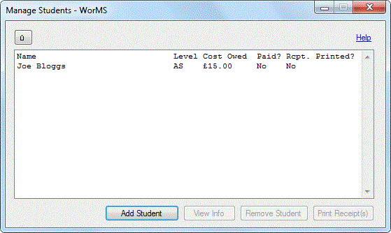
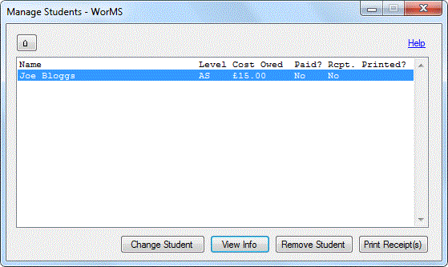
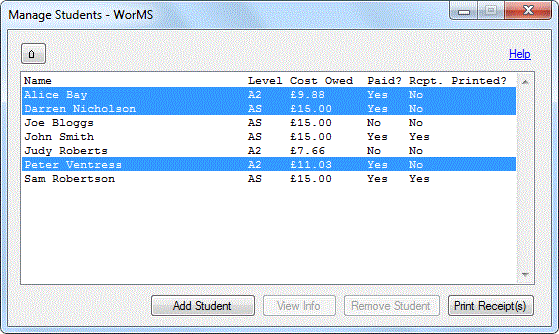
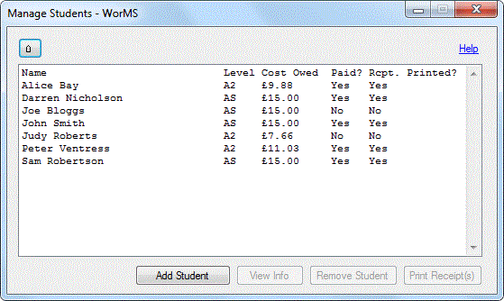

This form is used to manage student records and the resources they have used. Receipts can also be printed for students who have paid what they owe in the costs of using resources.
Upon starting the program for the first time or after changing the folder where data is saved, you will likely be presented with a message stating no student records could be found.

NOTE: If the students file or any student resource log files were to be deleted or tampered with, some or all records on the actual file could be ignored. Please see Troubleshooting for more details if students or a student's resources you have previously saved cannot be found.
The first student may be added through the View/Edit Student Information dialog, which is triggered by clicking the Add Student button. After adding a student, it will appear in the student list box once you return to the Student Manager.
More students can be added after this if required.
Selecting one student in the list will enable the Change Student, View Info and Remove Student buttons.
Clicking Change Student will allow you to view and change information associated with the student selected through the View/Edit Student Information dialog once again. Clicking View Info will trigger the same dialog but information will only be viewable. Clicking Remove Student will remove the selected student and their resource log, if any, from file. Print Receipt(s) can also be clicked to print a single receipt for this student, although it would be more sensible to print receipts for multiple receipts to save paper (see below).
If multiple students are selected by dragging the mouse across multiple items or by holding the Ctrl key and clicking students individually, they will not all be able to be changed, viewed or removed collectively. However, the print receipt(s) button will be enabled to print receipts for the selected students.
Clicking the Print Receipt(s) button will generate a print preview of the student's receipts, which feature spaces for handout number and signature, as well as the current date, their name and the cost paid, all placed automatically.

Upon printing the sheet(s), they can be cut into handouts for each individual student to receive. When the print preview is closed, the receipt printed value for each student will be updated automatically.
Attempting to print receipts for students who have not yet paid or had a receipt printed already will trigger a message box to confirm your selection. Receipts can still be printed but it is recommended to amend the data for each student first.